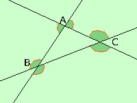

|
 Un angolo esterno e' qualunque angolo compreso fra il lato di un triangolo ed il prolungamento di un'altro lato quindi possiamo dire che un triangolo ha 6 angoli esterni, come puoi vedere dalla figura qui a lato Possiamo inoltre dire che gli angoli esterni sono due a due uguali perche' opposti al vertice |